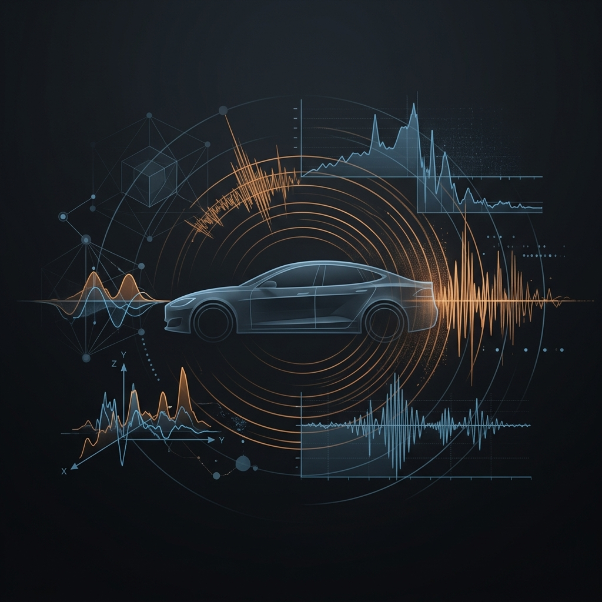
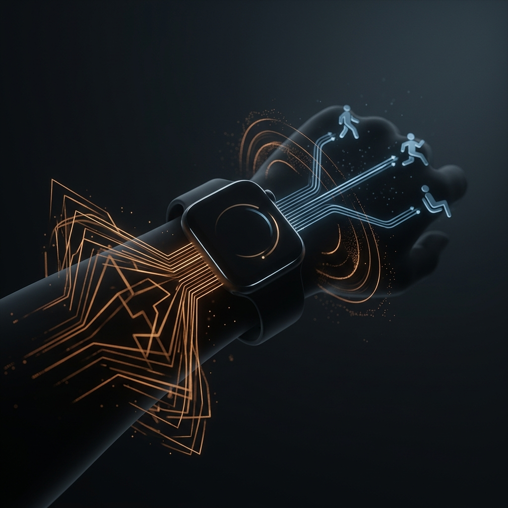

Applied AI Engineer · AI Systems Engineer · Edge AI & Embedded Systems
I build AI systems that have to survive contact with the physical world — on-device runtimes with hard RAM ceilings, crash-safety models validated against NHTSA forensic data, wearable sensors that can't afford a false positive. My foundation is Electronics & Telecommunication Engineering, which means I think in hardware constraints first and software second: latency budgets, memory ceilings, signal noise, failure modes — then the model. Over the last three years I've shipped 15+ client-facing AI automation systems through PageAI Systems, led applied-AI research validated on real NHTSA crash data (95.0% detection accuracy), and am currently building a 116,000-line Rust/Android on-device AI agent runtime with 2,051 tests. I work best in ambiguous, undocumented problem spaces — the kind where you have to study the domain before you're allowed to propose a solution. If you're building something that has to actually work on real hardware, in the real world, under real constraints — let's talk.
I'm an applied AI and embedded systems engineer with a B.Tech in Electronics & Telecommunication Engineering from PCET's Nutan College of Engineering and Research, Pune (2022–2026). My core strength is the bridge most AI engineers skip: hardware registers, sensors, signal processing, and embedded constraints, converted into working AI requirements and shipped systems. I operate across PyTorch, TensorFlow Lite, Rust, C/C++, Kotlin, and Python — but the tool selection always starts from the constraint, not the trend. Through PageAI Systems, my independent AI engineering practice, I've designed and deployed voice AI automation, RAG pipelines, and microservice architectures for 15+ clients, standardizing six reusable integration layers along the way. In parallel, I lead applied research: VISTA, a forensic crash-detection system validated against NHTSA CISS data at 95.0% accuracy and 11.98 km/h Delta-V error, is currently in journal-track submission to IJVSS. My current flagship build, AURA, is a private on-device AI agent runtime — 116K lines of Rust and Android/Kotlin, 2,051 tests, sub-10ms deterministic intent matching with LLM fallback for novel requests, AES-256-GCM encrypted local memory, and a hard target of under 500MB RAM on phone-class hardware. What sets me apart isn't any single framework — it's that I approach AI problems from the hardware up, treat safety and reproducibility as first-class requirements rather than afterthoughts, and take direct ownership of ambiguous problems rather than waiting for a fully-specified spec.
To build AI systems where the hardware constraints, safety guarantees, and real-world failure modes are treated as design inputs from day one — not retrofitted after a model works in a notebook.
A future where on-device AI is the default, not the exception — where personal AI agents run privately on your own hardware, crash-safety and biomedical AI systems are forensically reproducible, and the boundary between embedded engineering and machine learning engineering disappears entirely.
Nutan College of Engineering & Research
Crash-safety AI validation for insurance/fleet evidence review · NHTSA CISS validation · IJVSS journal-track manuscript
Key Responsibilities
Key Achievements
Bio-Inspired Robotics Research Group
Cross-functional rover systems engineering for a Theo Jansen walking rover — edge control, telemetry, sensors, and voice-command safety constraints
Key Responsibilities
Key Achievements
PageAI Systems
AI engineering practice for voice AI automation, client platforms, and microservice delivery
Key Responsibilities
Key Achievements
PCET's Nutan College of Engineering & Research, Pune, India
Key Highlights
A privacy-first on-device AI agent for reminders, routines, messages, and app actions, engineered to keep all personal context local and run within a hard memory budget on phone-class Android hardware. Combines a deterministic engine for repeat intents with LLM reasoning for novel requests, governed by typed action contracts and rollback paths.
116,000 lines of Rust and Android/Kotlin code, backed by 2,051 tests
Sub-10ms matching latency for repeat intents via the deterministic engine layer
Targeted and held under 500MB RAM on phone-class hardware
Private memory secured with SQLite, vector + full-text retrieval, AES-256-GCM/Argon2id vaulting, consent gates, and notification safeguards

Applied Research · IJVSS Journal-TrackA forensic crash-detection system designed for insurance and fleet evidence review, validated against real-world NHTSA CISS crash-pulse data with a tamper-evident, cryptographically verifiable evidence chain.
95.0% crash detection accuracy against NHTSA CISS ground truth
11.98 km/h Delta-V mean absolute error across 160 stratified validation cases
SHA-256/HMAC tamper-evident evidence architecture across inertial sensing, OBD-II, and audio/visual data
Built on a sub-$60 hardware bill of materials, making forensic-grade detection accessible at low cost

Faculty-Guided Research PrototypeA wearable edge-AI prototype for early intervention in body-focused repetitive behaviours (BFRBs), converting multimodal IMU, time-of-flight, and thermal sensor streams into 18-class behaviour recognition on the Child Mind Institute dataset.
Improved benchmark score from a 0.88 baseline to 0.93 internal score
Rebuilt the data validation layer: quaternion repair, handedness canonicalization, ToF symmetry correction, outlier filtering, and 128-step windowing
Trained modality-aware ensembles combining IMU CNN-SE-GRU branches, all-sensor fusion, and ToF 3D-CNN volumes
Prepared outputs for TensorFlow Lite edge inference deployment
Validated against real-world data.
International Journal of Vehicle Structures & Systems (Scopus-indexed, UGC CARE listed)
Converted real-world crash-safety evidence needs into an NHTSA CISS-validated system achieving 95.0% detection accuracy and 11.98 km/h Delta-V MAE, prepared as a first-author journal-track manuscript.
Hackathon / Innovation Challenge
Built a computer-vision and speech-driven sign-language-to-speech prototype with LLM-assisted interaction, placing first in competition.
PCET's Nutan College of Engineering & Research
Participated in the college incubation programme, hosted a technical hackathon, and maintained an active, demo-and-documentation-driven open-source GitHub presence.